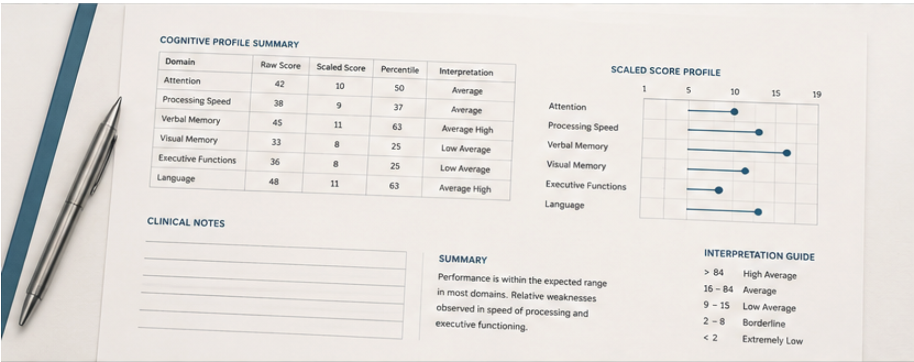

Biomedical Engineering
Biomedical Engineering Learning Archive
A long-term collection of coursework, technical notes, engineering concepts and reflections connecting technology, neuroscience and brain health.
Neuropsychology · Biomedical Engineering · Brain Health
I am a psychologist, neuropsychologist and Biomedical Engineering student. My work sits at the intersection of clinical practice, neuroscience, engineering and artificial intelligence.
About
My professional background is in cognitive assessment, neuropsychology and dementia.
I am now expanding this clinical experience through Biomedical Engineering, with a growing interest in physiological signals, medical devices, scientific computing and artificial intelligence.
Explore my backgroundResearch
I am interested in how cognitive change can be detected earlier, how clinical data can become more meaningful and how technology can support professional judgement without replacing it.
Explore research01
Projects
Biomedical Engineering
A long-term collection of coursework, technical notes, engineering concepts and reflections connecting technology, neuroscience and brain health.

Neuropsychology
An editorial project exploring how cognitive data, neuropsychological interpretation and everyday functioning fit together.

Data and Brain Health
Small experiments using data analysis, visualisation and physiological signals to explore questions related to cognition and brain health.
02
Writing
A reflection on how clinical practice led me towards engineering, biological measurement, data and medical technology.
A reflection on clinical interpretation, everyday functioning and the limits of reducing cognition to a single number.
Contact
I am open to conversations related to neuropsychology, neuroscience, Biomedical Engineering, medical technology and brain health research.
contact@carolinasanchezgirona.com